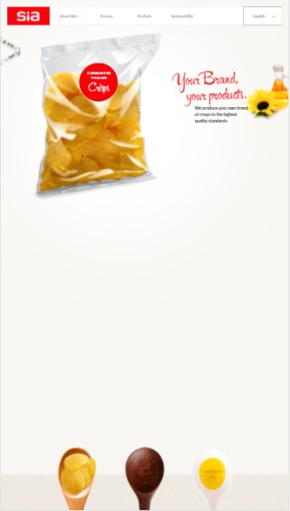
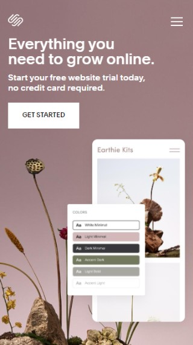
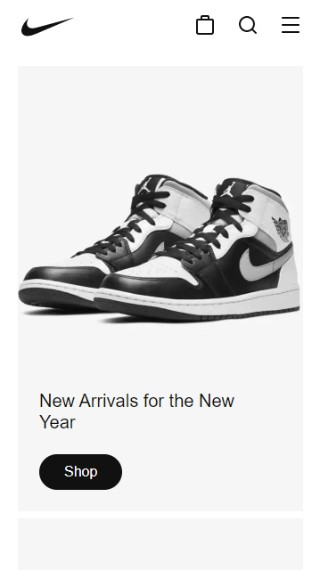

Rule of Thirds
- Sia
- siaperitivos.com

The Sia website is a great example of the rule of thirds. The focus items on this page are located where the vertical and horizontal lines meet on the page
White Space & Clean Design
- Squarespace
- squarespace.com

The Squarespace website is a great example of the white space and clean design. This design spaces out the information and images on the pages to not make it feel cramped.
Contrast
- Nike
- nike.com

The Nike website is a great example of contrast design. The background of the site is white and a very light grey which alloes the product to jump off the page.